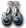

※各怪物的編輯請由標題的鉛筆圖示進行。掉落物品的編輯也可以從掉落物品欄的
出現怪物
蠟燭斯內奇
| 蠟燭斯內奇 | Lv | AC | MC | AAR | SAR | 掉落物品 |
| HP:5,160 | 50 | 55 | -40 | 0 | -10 | 克雷戒指、 琥珀、 琥珀、 童話車票[格烈佛區]、強化連擊藥水製法、 童話車票[格烈佛區]、強化連擊藥水製法、 藍色石頭、 藍色石頭、 [87]蠟燭妖變身捲軸 [87]蠟燭妖變身捲軸 |
| 經驗值 | 名聲值 | 金錢 | 攻擊屬性 | 防禦屬性 | ||
| 1200 | 0 | 730 | 火 | 火 | ||
| STR | DEX | INT | WIS | CON | ||
| 3 | 21 | 21 | 21 | 21 |
備註
格雷布檸檬砲蛙車
| 格雷布檸檬砲蛙車 | Lv | AC | MC | AAR | SAR | 掉落物品 |
| HP:2,520 | 50 | 5 | 20 | 20 | -10 | 春雨耳環、 綠色石頭、混合藥水製造法 綠色石頭、混合藥水製造法 |
| 經驗值 | 名聲值 | 金錢 | 攻擊屬性 | 防禦屬性 | ||
| 900 | 1000 | 600 | 隨機 | 隨機 | ||
| STR | DEX | INT | WIS | CON | ||
| 21 | 21 | 21 | 21 | 21 |
備註
丘布檸檬砲蛙車
| 丘布檸檬砲蛙車 | Lv | AC | MC | AAR | SAR | 掉落物品 |
| HP:2,520 | 50 | 5 | 20 | 20 | -10 | 微風戒指、綠色石頭、琥珀、  玉石耳環、混合藥水製造法、[92]檸檬砲蛙車變身捲軸 |
| 經驗值 | 名聲值 | 金錢 | 攻擊屬性 | 防禦屬性 | ||
| 900 | 1,000 | 600 | 隨機 | 隨機 | ||
| STR | DEX | INT | WIS | CON | ||
| 21 | 21 | 21 | 21 | 21 |
備註
 發條鼠
發條鼠
| 發條鼠 | Lv | AC | MC | AAR | SAR | 掉落物品 |
| HP:11,250 | 70 | 55 | -40 | 0 | -10 | 詛咒捲軸、童話車票[胡桃鉗區]、藍石 |
| 經驗值 | 名聲值 | 金錢 | 攻擊屬性 | 防禦屬性 | ||
| 2,700 | 0 | 1,100 | 風 | 風 | ||
| STR | DEX | INT | WIS | CON | ||
| 3 | 31 | 31 | 31 | 31 |
備註
 紅卡人
紅卡人
| 紅卡人 | Lv | AC | MC | AAR | SAR | 掉落物品 |
| HP:22,500 | 85 | 15 | 50 | 60 | 40 |  性感之帽、高級大型超級技能之水10個製法、 性感之帽、高級大型超級技能之水10個製法、 紫色石頭、琥珀、 紫色石頭、琥珀、 紫色夏威夷裝、 紫色夏威夷裝、 長劍 長劍 |
| 經驗值 | 名聲值 | 金錢 | 攻擊屬性 | 防禦屬性 | ||
| 12,684 | 300 | 11,200 | 隨機 | 隨機 | ||
| STR | DEX | INT | WIS | CON | ||
| 81 | 21 | 21 | 21 | 111 |
 屬性下降、
屬性下降、 噴射之燄、
噴射之燄、 緩慢術
緩慢術